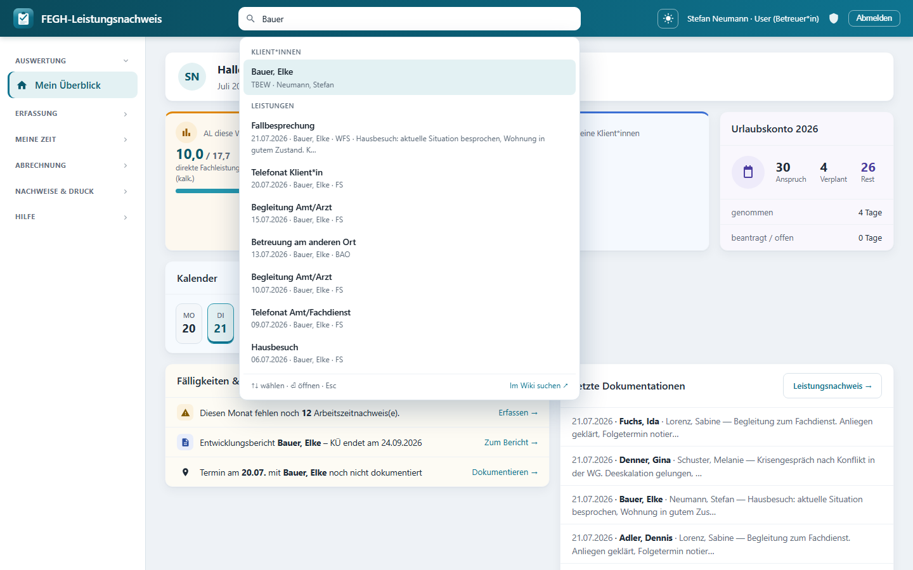

Globale Suche¶

Globale Suche: Treffer nach Kategorien (Klientinnen, Leistungen …), per Tastatur bedienbar.*
Die globale Suche (im Spotlight-Stil) ist der schnellste Weg durch die Anwendung: eine Eingabezeile, ein Tastenkürzel, sofortige Treffer. Sie liegt fest in der Kopfleiste und ist auf jeder Seite nach dem Login verfügbar – Sie müssen also nie erst zur passenden Liste navigieren, um jemanden oder etwas zu finden.
Für wen?
Für alle angemeldeten Rollen. Was Sie finden, hängt aber streng von Ihrer Rolle ab (siehe Was durchsucht wird). Die Suche zeigt niemals mehr, als Sie ohnehin sehen dürfen.
Auf einen Blick¶
| Funktion | Verhalten |
|---|---|
| Position | Suchleiste in der Topbar, auf jeder Seite nach Login |
| Öffnen / Fokus | Klick in die Leiste oder Strg + K (Windows/Linux) bzw. ⌘ + K (Mac) |
| Live-Treffer | erscheinen während des Tippens, ab 2 Zeichen |
| Navigation | ↑ / ↓ wählen, ⏎ (Enter) öffnet, Esc schließt |
| Rollen-Scope | zeigt nur, was Ihre Rolle sehen darf (DSGVO) |
| Fußzeile | Link „Im Wiki suchen" für dieses Handbuch |
Die Suchleiste öffnen¶
Die Suchleiste ist immer sichtbar. Sie können sofort hineinklicken und tippen – oder von überall die Tastatur nutzen:
Tastenkürzel Strg / ⌘ + K
Drücken Sie Strg + K (auf dem Mac ⌘ + K), egal wo Sie gerade sind.
Der Cursor springt in die Suchleiste und markiert vorhandenen Text, sodass
Sie direkt eine neue Suche tippen können. Das Kürzel ist auch als kleines
⌘K-Zeichen rechts in der Leiste eingeblendet.
Live-Suchen¶
Sobald Sie mindestens 2 Zeichen eingetippt haben, erscheint unter der Leiste eine Trefferliste, die sich während des Tippens laufend aktualisiert. Sie müssen nicht Enter drücken, um Ergebnisse zu sehen.
Die Treffer sind nach Kategorien gruppiert (z. B. „Klient*innen", „Leistungen", „Kolleg*innen"). Jeder Eintrag zeigt einen Titel und eine Unterzeile mit Kontext (z. B. Team, Datum, Bezugsbetreuung), damit Sie den richtigen Treffer sicher erkennen.
Mehrere Wörter (Volltext)¶
Sie können mehrere Suchbegriffe mit Leerzeichen kombinieren. Es gilt:
Jedes eingegebene Wort muss in irgendeinem durchsuchten Feld des Treffers vorkommen.
Beispiel
Die Eingabe müller gruppe findet einen Treffer nur dann, wenn sowohl
„müller" als auch „gruppe" irgendwo in den durchsuchten Feldern stehen –
egal in welchem. Die Reihenfolge der Wörter spielt keine Rolle, Groß-/
Kleinschreibung ebenfalls nicht.
Je mehr Wörter Sie eingeben, desto enger wird die Trefferliste – ideal, um von vielen Namensgleichen schnell auf den richtigen einzugrenzen.
Mit der Tastatur navigieren¶
Sie können die komplette Suche ohne Maus bedienen:
| Taste | Wirkung |
|---|---|
↓ |
nächsten Treffer auswählen |
↑ |
vorherigen Treffer auswählen |
⏎ (Enter) |
ausgewählten Treffer öffnen |
Esc |
Eingabe leeren, Trefferliste schließen und Fokus verlassen |
Der ausgewählte Treffer ist farblich hervorgehoben und scrollt bei Bedarf automatisch ins Bild. Übersprungen werden dabei reine Info-Einträge ohne Ziel – Enter öffnet immer nur echte, verlinkte Treffer.
Schnell-Workflow
Strg/⌘ + K → Name tippen → ↓ bis zum richtigen Treffer → ⏎.
So wechseln Sie in Sekunden zu einer Person, einer Leistung oder einer
Kassenbuchung, ohne durch Menüs zu klicken.
Was durchsucht wird¶
Die Suche greift quer durch die zentralen Datenbereiche – aber streng rollen-gescopt. Technisch verwendet jede Kategorie dieselben Zugriffsgrenzen wie die normalen Listen der Anwendung. Es kann also über die Suche nichts sichtbar werden, was Ihnen sonst verwehrt ist.
| Kategorie | Durchsuchte Felder | Sichtbar für |
|---|---|---|
| Klient*innen | Nachname, Vorname, Personen-ID, THFD, Kommentar | Rollen mit Klientenarbeit (eigener Scope) |
| Leistungen | Tätigkeit, Notiz, Klient-Name | Rollen mit Klientenarbeit |
| Gruppen | Thema, Teilnehmer-Namen | Rollen mit Klientenarbeit |
| Kolleg*innen | Name, Vorname, Kürzel | team-gescopt; Admin/Superuser: alle |
| Teams | Team-Name | team-gescopt; Admin/Superuser: alle |
| Kasse | Buchungstext, Kontonr., Kostenstelle | nur mit Kassenzugriff |
Rollen im Detail (DSGVO)¶
Die Suche setzt die Datenschutz-Grenzen des Systems konsequent durch:
Kein Umgehen von Zugriffsgrenzen
- User (eigenes Team): findet eigene Klient*innen, deren Leistungen und Gruppen sowie Kolleg*innen/Teams im eigenen Team.
- Leitung: findet zusätzlich die Klient*innen, Leistungen und Personen der geleiteten Teams; Treffer verlinken passend ins Dashboard bzw. in die Bearbeitung.
- Admin: findet keine Klientendaten. Admin verwaltet Personal/Technik und sieht deshalb nur Kolleg*innen und Teams – keine Klient*innen, Leistungen oder Gruppen.
- Verwaltung: findet nur Kasse (Buchungen), da keine Klientenarbeit.
- Break-Glass-Superuser (
root): sieht organisationsweit alle Kolleg*innen und Teams (Personenverzeichnis).
Die Datenbank-Abfragen filtern immer zuerst auf den erlaubten Datenraum und suchen erst danach im Text. Ein leerer Datenraum liefert leere Treffer – unabhängig vom Suchbegriff.
Im Wiki suchen¶
Ganz unten in der Trefferliste finden Sie eine Fußzeile mit dem Link „Im Wiki suchen ↗". Er öffnet dieses Handbuch (in einem neuen Tab) und übergibt Ihren aktuellen Suchbegriff. Praktisch, wenn Sie statt eines Datensatzes eine Anleitung oder Erklärung suchen.
Die Fußzeile blendet außerdem die Tastatur-Hinweise ein: ↑↓ wählen · ⏎ öffnen · Esc.
Kurz technisch¶
Für Entwickler*innen / Betrieb
- Endpunkt:
GET /api/suche/?q=<begriff>(nachweis:api_suche), nur mit Login. Antwort ist JSON:{ q, total, kategorien: [{ key, label, items }] }. - Auslöser: Das Frontend in
base.htmlruft den Endpunkt gedrosselt (Debounce ~160 ms) ab, sobaldq≥ 2 Zeichen hat; darunter wird gar nicht erst gesucht. - Volltext-Logik:
_volltext_q(felder, q)innachweis/views.pybaut einQ-Objekt: AND über die Tokens, OR über die Felder. Jedes Wort wird per__icontains(case-insensitive Teilstring) geprüft. - Rollen-Scope:
_suche_kategorien(request, q)nutzt dieselben Service-Funktionen wie die übrigen Views (services.klienten_fuer,services.teams_fuer,services.kassen_fuer,services.ohne_klientenarbeit,services.ist_admin…). Das Scoping passiert vor dem Textfilter. - DB-Unabhängigkeit: Bewusst nur
icontains-Tokens – läuft identisch auf SQLite (Entwicklung) und PostgreSQL (Produktion), ohne DB-spezifische Volltext-Features.
# nachweis/views.py – Kern der Multi-Wort-Suche
def _volltext_q(felder, q):
ausdruck = Q()
for token in q.split(): # AND über die Wörter
oder = Q()
for f in felder: # OR über die Felder
oder |= Q(**{f"{f}__icontains": token})
ausdruck &= oder
return ausdruck
Skalierung später
Für sehr große Datenbestände lässt sich der icontains-Ansatz später gegen
PostgreSQL-Volltextsuche (SearchVector/SearchQuery, GIN-Index)
tauschen, ohne das Frontend oder die API-Form zu ändern. Solange der
Datenbestand überschaubar ist, ist die aktuelle, DB-unabhängige Variante
schneller umzusetzen und einfacher zu betreiben.